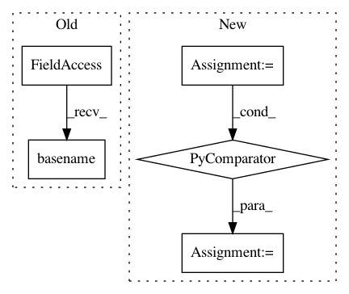

5b5fb4c657f0cdf4fe404aa9daaf99aca83d01cf,mltsp/tests/test_flask_app.py,,featurize_setup,#,35
Before Change
fpaths.append(pjoin(DATA_DIR, fname))
for fpath in fpaths:
shutil.copy(fpath, config["paths"]["upload_folder"])
dest_paths.append(pjoin(config["paths"]["upload_folder"], os.path.basename(fpath)))
return dest_paths
After Change
CUSTOM_SCRIPT = "testfeature1.py"
def featurize_setup():
ts_paths = [pjoin(config["paths"]["upload_folder"], f) for f in TS_FILES]
custom_script_path = pjoin(config["paths"]["upload_folder"], CUSTOM_SCRIPT)
for fname in TS_FILES + [CUSTOM_SCRIPT]:
fpath = pjoin(DATA_DIR, fname)
shutil.copy(fpath, config["paths"]["upload_folder"])
In pattern: SUPERPATTERN
Frequency: 3
Non-data size: 5
Instances
Project Name: cesium-ml/cesium
Commit Name: 5b5fb4c657f0cdf4fe404aa9daaf99aca83d01cf
Time: 2016-02-24
Author: brettnaul@gmail.com
File Name: mltsp/tests/test_flask_app.py
Class Name:
Method Name: featurize_setup
Project Name: pantsbuild/pants
Commit Name: 91f0e27b4d7e94e0e5cafe1c2a6fb37c80ab8b41
Time: 2015-08-19
Author: john.sirois@gmail.com
File Name: contrib/go/src/python/pants/contrib/go/tasks/go_workspace_task.py
Class Name: GoWorkspaceTask
Method Name: _symlink_local_src
Project Name: snipsco/snips-nlu
Commit Name: a05ea9b6422bf13fdff4eed2e1373eb99c2db30d
Time: 2018-05-14
Author: adrien.ball@snips.net
File Name: snips_nlu_dataset/assistant_dataset.py
Class Name: AssistantDataset
Method Name: from_files